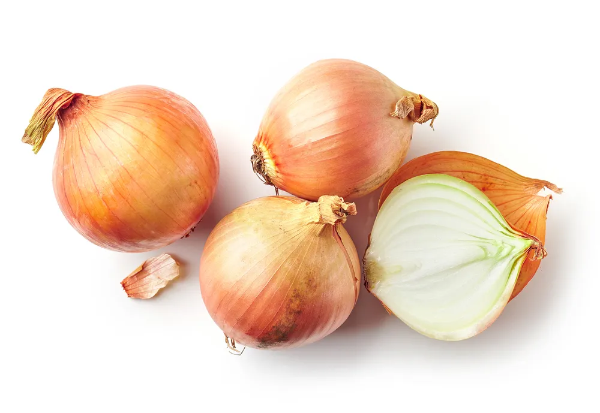

Foods You Should Never Refrigerate

For many foods, cold storage like the refrigerator is a necessity, such as foods like dairy products, meat, and some vegetables. However, there are other foods that, if stored in the fridge, can actually negatively impact the taste, quality, and shelf life. Products that need to be stored in the fridge usually state as much on the label or package, but there are plenty of others (particularly fresh produce) that don’t come with instructions. This is when it’s up to the consumer to know whether foods like tomatoes are better left sitting on the counter or in the fridge.
Basil
Basil is a perfect way to add flavor to a dish. Especially if it’s fresh! But storing a full, vibrant, fragrant green bunch of basil in the fridge will only end in disappointment. That once beautiful bunch of basil will turn it black. Cold moisture is no friend of fresh basil. It causes discolor, wilt, and decay very quickly.
The best way to preserve fresh basil is by putting a bouquet in a fresh cup of water on the counter. This not only provides a nice springtime smell (like fresh cut flowers) to the kitchen, but also preserves the texture and flavor of this herb for much longer.
Avocados
Even though avocado is a fruit and it seems like a food that should be refrigerated, it’s actually the worst thing a person can do for their avocado! Especially if it’s unripe. It will prevent it from ever ripening and remain rock-hard until it goes bad. However, the Food Network does say it’s okay to place ripe avocados in the fridge if you’re not planning on using them right away. This helps preserve them a little longer.
Since avocados don’t begin the ripening process until they’re plucked from trees, the fruit may need a few days to become the ideal firm yet velvety texture for guacamole. To help them along, let too-firm avocados ripen on the counter. Once cut, keep the stone intact and store in the refrigerator. Storing it in a paper bag can help speed up the ripening process.
Whole Melons
Melons are loved for their sweet, juicy yet firm texture. However, things can go wrong with watermelon , honeydew, and cantaloupe (or muskmelon) fairly quickly if it’s stored (when in whole form) in the refrigerator.
According to the U.S. Department of Agriculture (USDA) melons are robbed of the vital antioxidants, beta-carotene and lycopene, and speedy decay in cold, moisture-rich environments like the refrigerator. Instead, store whole melons right there on the counter at room temperature. However, once sliced up, melons can go in the fridge in a covered container.
Onions
Ever wondered why onions are sold in mesh bags? According to the U.S. National Onion Association , it’s because they allow air to circulate. This is also why it’s not a good idea to then tuck them into a dark enclosed drawer of the fridge after purchasing them.
Onions thrive in cool, but not cold, dry, well-aerated environments. The ideal place to store onions would be a pantry or cupboard. If they are peeled and cut, the remaining part of the onion should go in the fridge (preferably a covered container). Another tip: store onions away from potatoes. Potatoes (even unpeeled) release gas and moisture that can accelerate onion decay.
Potatoes
Chilling potatoes will not only rob them of essential flavor; it will convert the starches within to sugar far more quickly, according to the Potato Growers Association of Alberta , in Canada.
To avoid totally ruining potatoes, store them unwashed in a paper bag in your pantry at a cool, but not cold, temperature. You can also place them in a dark, dry, well-ventilated cupboard in a cardboard or wood box, or paper bag. Avoid placing them in plastic or pre-washing as moisture can become trapped and accelerate veggie rot.
Garlic
Similar to the onion, garlic likes to hang fancy free—meaning air ventilation is essential for keeping garlic fresh and for preventing early rot. This is why the ideal spot for garlic bulbs is loosely tucked away in a well-ventilated pantry.
In a dark, dry, cool place the air can circulate around the pungent bulbs and keep them fresh, firm, and flavorful for up to 2 months. You should only put garlic in the fridge once or twice before the unpeeled heads take on a rubbery texture and begin to sprout mold.
Squash and Pumpkin
Squash varieties may look very different. After all the adorable acorn, the fleshy orange butternut, the tubular-striped delicata, and the pale yellow spaghetti look so unalike it wouldn’t be hard for a person to make the mistake of thinking they require different storage insturctions. may think they require different storage instructions.
However, that’s not the case. Experts at the Canadian Produce Marketing Association claim squashes and pumpkins of all types are best left in a cool (not cold), dry, panty to preserve texture and nutrients. Once ripe squash can be upgraded to the counter.
Tomatoes
We’ve all had the unfortunate experience of biting or cutting into a mushy tomato. Sometimes this happens because it’s just gone past its shelf life, other times it’s due to incorrect storage. Storing a tomato in a cold environment like the refrigerator causes is to become dull and mealy.
A better place for it to be is on the counter, at room temperature. If a tomato is unripe, place it on a windowsill to speed up the process. The natural ripening process takes about two to three days. When they get too ripe, make tomato jam or roasted-tomato sauce. Another tip: don’t store tomatoes in plastic where they’ll inevitably turn mushy. If a bag is required, always use paper.
Coffee
There’s nothing better than a fresh cup of coffee first thing in the morning. Start the day off on the right foot by storing coffee properly! Otherwise that first sip won’t be so enjoyable! Don’t store coffee (ground or whole bean) in the fridge.
According to the Food Network, the humidity and build up of water condensation will wreak havoc on its flavor and overall quality. A better option for storage is in an airtight container in the pantry.
Hot Sauce
Most condiments (especially once opened) are stored in the fridge. So it’s not unusual for people to think that their spicy hot sauce also goes in the refrigerator. The truth is, it doesn’t have to!
Free up some coveted fridge real estate and move any hot sauce bottles into the cupboard. The Food Network reassures there’s enough vinegar in hot sauce to prevent bacterial growth. Plus, the heat from the peppers is actually more potent at room temperature.
Honey
What’s the buzz on honey ? Well, in order to keep honey in a form that is still usable, it must be stored at room temperature. If it is placed in the fridge, it can seize up and crystallize, turning it from that ooey gooey texture we love to being hard and unable to pour or spread on food.
Don’t be afraid to store honey on the counter or in a cupboard. As long as it’s not in the fridge, unlike some of the fruits and vegetables, there is no preference for this product.
Bananas
Bananas require warm temperatures in order for them to ripen which is why the fridge is not a good place for them. “The cold temperatures of the fridge breakdown the cell walls of the banana peel, quickly turning it brown and increasing the rate of ripening,” explains the Food Network.
Now, if the purpose is to use bananas for baking (i.e. banana bread or muffins), then placing them in the fridge can help get them ready for baking faster. But if they are going to be eaten as a snack, the counter (preferably near some sunlight) is the best place for them.
Citrus Fruits
There’s a reason citrus fruits like lemons, limes, grapefruit, and oranges grow and thrive in warmer climates. That’s what they like! While cold citrus fruits are easier to zest, if enjoying them raw or cut, store them on the counter. Just be sure to remove any fruits that start showing mold as it can quickly spread to the others.
To zest a non-cold citrus fruit, the Food Network recommends gently pressing and rolling the fruit on the countertop prior in order to get the juices flowing.
Morel Mushrooms
Most mushrooms belong in the fridge, except for morel mushrooms. These guys should be left unwashed sitting on the counter. In fact, the best place for them is in a paper bag. Better Homes & Garden says the paper bag stops them from going bad.
Don’t have a paper bag? It is okay to leave them in their original container, just remove the plastic wrap from the top. This prevents them from becoming slimy after only a day or two, adds the source.
Bread
Most people likely store their bread in a drawer or on the counter, but even I’ve been guilty of this at some point – putting a loaf in the fridge to prevent mold growth. While this might help, it’ll also dry out the bread.
To maintain freshness and quality, store bread on the counter. If there’s too much bread and it can’t be eaten before going bad – place some in the freezer. Take it out when it’s needed.
Source: https://activebeat.com/diet-nutrition/8-foods-you-should-stop-refrigerating/